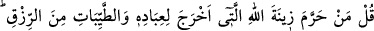
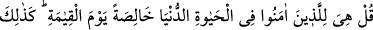
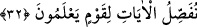

Calinus’a söyleyecek söz bırakmamış.” dedi.
İbni Abbas (r. anhümâ)’nın şöyle dediği rivayet edilmiştir: “İsraf ve kibir seni hataya
düşürmedikçe dilediğini ye ve istediğini giy.”
Ruhsat ehlinin Ramazan ayı dışında bir gün ve gecede iki öğünden fazla yemek
yememeleri lâzımdır. Azimetle amel edenler ise sadece bir öğün yemelidirler. Birinci
gruptakilerin iki öğünden, ikinci gruptakilerin ise bir öğünden fazla yemeleri, haddi
aşmak ve hayvanların sıfatları ile sıfatlanmaktır.
Hindliler, hastaları şifaya kavuşturmak için perhizi çok kullanırlar. Birkaç gün
hastanın yiyip içmesine ve konuşmasına engel olurlar, hasta da iyileşir. Şu halde perhiz
yolunu tutmak en uygun olan davranıştır.
32. De ki: Allah’ın kulları için yarattığı süsü ve temiz rızıkları kim haram kıldı?
De ki: Onlar, dünya hayatında, özellikle kıyamet gününde mü’minlerindir. İşte
bilen bir topluluk için ayetleri böyle açıklıyoruz.
Müslümanlar, Kâbe’yi elbiseli olarak tavaf edince ve hac günlerinde et ve yağlı
yemekler yiyince müşrikler onları kınadılar. Çünkü kendileri Kâbe’yi çıplak olarak
tavaf ediyor ve ihramlı iken et ve yağlı yemekler yemiyorlardı. Bunun üzerine Allah
Teâlâ Habibi (s.a.v.)’e onlara şöyle demesini emretti:
“De ki: Allah’ın kulları için” pamuk ve keten gibi bitkilerden, ipek ve yün gibi
hayvanlardan ve zırh gibi madenlerden “çıkardığı süsü” elbiseleri ve diğer süslenilen
şeyleri “ve güzel rızıkları” et, yağ ve süt gibi yiyilip içilerek tad alınıp lezzet duyulan
maddeleri “kim haram etti?”
Buradaki soru, inkarîdir. Yani, “Kimse haram edemez.” demektir.
Bir insan farzları eda eder ve şık elbiseler giyerek güzel bir görünüme sahip olmak
isterse, bunda bir beis yoktur. Fakat bir kimse, en azıyla geçinmeye kanaat edip malının
geri kalanını, ahirette kendisine fayda verecek şekilde hayır yollarına sarf ederse bu
daha güzeldir. Çünkü Allah katında bulunan sevap ve karşılık daha hayırlı ve sonsuzdur.
Aynı zamanda kendisine yetenin en azıyla iktifâ etmek, azimetle amel etmektir. Dünya
nimetlerinden daha fazla istifade etmek ve daha ziyade lezzet elde etmek ise ruhsattır.
Bu ayet, bu ruhsata delil teşkil eder. Yine bu ayet, yiyecek, giyecek ve çeşitli şekillerde
kullanılacak şeylerde aslolanın mübahlık olduğuna da delâlet etmektedir. Ayette